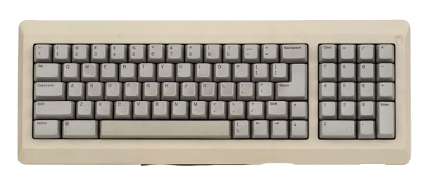
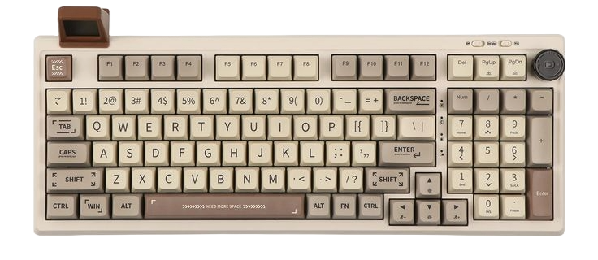
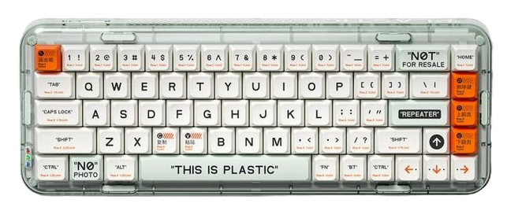

in week 9, we took our arduino experiments to the next level. this time, it wasn’t just about building circuits we finally made them talk to our computers.

we connected the physical with the digital. using a potentiometer [a knob-like sensor that adjusts resistance], we were able to control what appeared on a live, responsive webpage. turning the dial changed values on our screens in real time.

it was the first time we saw physical input directly affect something on our screens. turning a dial and watching the webpage respond in real time made the connection between hardware and software feel real and so cool.
